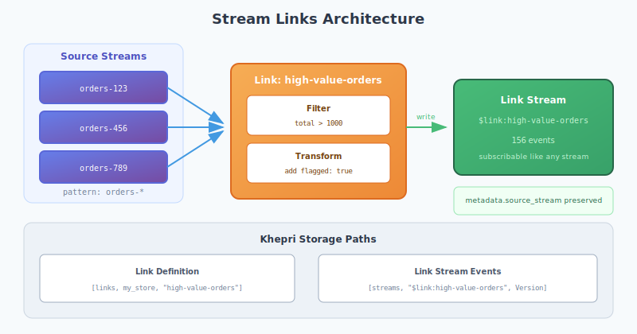

Stream Links and Projections
View SourceStream links enable derived streams from source streams through filtering and transformation. This guide covers the server-side implementation, lifecycle management, and use cases.
Overview
The reckon_db_links module provides:
| Function | Purpose |
|---|---|
create/2 | Create a new link definition |
delete/2 | Remove a link |
get/2 | Get link configuration |
list/1 | List all links |
start/2 | Start link processing |
stop/2 | Stop link processing |
info/2 | Get detailed link statistics |
Architecture

What is a Stream Link?
A stream link is a derived stream that:
- Subscribes to one or more source streams
- Filters events based on a predicate function
- Transforms events (optional) before writing
- Writes matching events to a link stream
Link streams are named with a $link: prefix and behave like regular streams.
Creating Links
Basic Link
ok = reckon_db_links:create(my_store, #{
name => <<"high-value-orders">>,
source => #{type => stream_pattern, pattern => <<"orders-*">>},
filter => fun(E) -> maps:get(total, E#event.data, 0) > 1000 end
}).Link with Transform
ok = reckon_db_links:create(my_store, #{
name => <<"flagged-orders">>,
source => #{type => stream_pattern, pattern => <<"orders-*">>},
filter => fun(E) -> maps:get(total, E#event.data, 0) > 5000 end,
transform => fun(E) ->
NewData = maps:put(flagged, true, E#event.data),
NewData2 = maps:put(flagged_at, erlang:system_time(millisecond), NewData),
E#event{data = NewData2}
end
}).Link with Backfill
Process existing events when starting:
ok = reckon_db_links:create(my_store, #{
name => <<"all-payments">>,
source => #{type => stream_pattern, pattern => <<"payments-*">>},
backfill => true %% Process existing events on start
}).Source Specifications
Single Stream
source => #{type => stream, stream_id => <<"orders-123">>}Stream Pattern (Wildcard)
source => #{type => stream_pattern, pattern => <<"orders-*">>}
source => #{type => stream_pattern, pattern => <<"*-completed">>}All Streams
source => #{type => all}
%% Excludes $link: streams to prevent loopsLink Lifecycle
Starting a Link
ok = reckon_db_links:start(my_store, <<"high-value-orders">>).This:
- Updates link status to
running - Performs backfill if
backfill => true - Subscribes to source stream(s) for new events
Stopping a Link
ok = reckon_db_links:stop(my_store, <<"high-value-orders">>).This:
- Unsubscribes from source streams
- Updates link status to
stopped
Checking Link Status
{ok, Info} = reckon_db_links:info(my_store, <<"high-value-orders">>),
%% #{
%% name => <<"high-value-orders">>,
%% source => #{type => stream_pattern, pattern => <<"orders-*">>},
%% status => running,
%% processed => 1523,
%% link_stream => <<"$link:high-value-orders">>,
%% link_stream_version => 156,
%% created_at => 1735689600000,
%% last_event => <<"evt-789">>
%% }Khepri Storage
Link Definitions
Links are stored at:
[links, StoreId, LinkName] -> #link{} recordLink Streams
Link output is written to:
[streams, <<"$link:LinkName">>, PaddedVersion] -> #event{}Link Record Structure
-record(link, {
name :: binary(),
source :: source_spec(),
filter :: fun((event()) -> boolean()) | undefined,
transform :: fun((event()) -> event()) | undefined,
backfill :: boolean(),
created_at :: integer(),
status = stopped :: running | stopped | error,
processed = 0 :: non_neg_integer(),
last_event :: binary() | undefined
}).Subscribing to Link Streams
Link streams are regular streams:
%% Subscribe to the link stream
reckon_db_subscriptions:subscribe(
my_store,
stream,
<<"$link:high-value-orders">>,
<<"my-subscription">>,
#{handler => fun handle_high_value_order/1}
).
%% Read from the link stream
{ok, Events} = reckon_db_streams:read(
my_store,
<<"$link:high-value-orders">>,
0, 100, forward
).Event Transformation
Preserved Metadata
When events are written to link streams, source information is preserved:
event_to_map(Event) ->
#{
event_id => Event#event.event_id,
event_type => Event#event.event_type,
data => Event#event.data,
metadata => maps:merge(Event#event.metadata, #{
source_stream => Event#event.stream_id,
source_version => Event#event.version
})
}.Custom Transforms
Transform functions receive the full event record:
transform => fun(Event) ->
%% Add computed field
Data = Event#event.data,
Total = maps:get(quantity, Data, 0) * maps:get(price, Data, 0),
NewData = maps:put(computed_total, Total, Data),
%% Return modified event
Event#event{data = NewData}
endPattern Matching
Wildcard patterns are converted to regex:
wildcard_to_regex(Pattern) ->
Escaped = re:replace(Pattern, <<"[.^$+?{}\\[\\]\\\\|()]">>,
<<"\\\\&">>, [global, {return, binary}]),
Converted = binary:replace(Escaped, <<"*">>, <<".*">>, [global]),
<<"^", Converted/binary, "$">>.Examples:
orders-*matchesorders-123,orders-456*-completedmatchesorder-completed,payment-completeduser-*-eventsmatchesuser-123-events
Use Cases
1. Event Type Aggregation
Collect all payment events across customer streams:
ok = reckon_db_links:create(my_store, #{
name => <<"all-payments">>,
source => #{type => all},
filter => fun(E) ->
EventType = E#event.event_type,
EventType =:= <<"PaymentReceived">> orelse
EventType =:= <<"PaymentFailed">> orelse
EventType =:= <<"RefundIssued">>
end,
backfill => true
}).2. High-Value Transaction Monitoring
ok = reckon_db_links:create(my_store, #{
name => <<"high-value-txns">>,
source => #{type => stream_pattern, pattern => <<"account-*">>},
filter => fun(E) ->
Amount = abs(maps:get(amount, E#event.data, 0)),
Amount > 10000
end,
transform => fun(E) ->
E#event{metadata = maps:put(flagged_reason, <<"high_value">>,
E#event.metadata)}
end
}).3. Audit Trail
ok = reckon_db_links:create(my_store, #{
name => <<"security-audit">>,
source => #{type => all},
filter => fun(E) ->
EventType = E#event.event_type,
lists:member(EventType, [
<<"UserLoggedIn">>,
<<"PasswordChanged">>,
<<"PermissionGranted">>,
<<"DataExported">>
])
end
}).4. Real-Time Analytics Feed
ok = reckon_db_links:create(my_store, #{
name => <<"analytics-feed">>,
source => #{type => all},
filter => fun(_) -> true end, %% All events
transform => fun(E) ->
%% Strip PII, keep only analytics-relevant fields
SafeData = maps:with([event_type, timestamp, stream_id], #{
event_type => E#event.event_type,
timestamp => E#event.epoch_us,
stream_id => E#event.stream_id
}),
E#event{data = SafeData}
end
}).Telemetry
Link operations emit telemetry:
%% Event: [reckon_db, link, created | started | stopped | deleted]
%% Measurements: #{system_time => integer()}
%% Metadata: #{store_id => atom(), link_name => binary()}Error Handling
| Error | Cause | Resolution |
|---|---|---|
{error, not_found} | Link does not exist | Verify link name |
{error, already_exists} | Link name in use | Choose different name |
| Filter crash | Filter function threw exception | Returns false (event skipped) |
| Transform crash | Transform function threw exception | Returns original event |
Best Practices
1. Use Defensive Filters
filter => fun(E) ->
try
maps:get(amount, E#event.data, 0) > 1000
catch
_:_ -> false
end
end2. Avoid Expensive Transforms
Transforms run for every matching event. Keep them lightweight.
3. Consider Backfill Costs
For large streams, backfill can be expensive. Consider:
- Creating link without backfill first
- Manually backfilling in batches during off-peak
4. Monitor Processed Counts
%% Check link is keeping up
{ok, Info} = reckon_db_links:info(my_store, <<"my-link">>),
Processed = maps:get(processed, Info),
%% Alert if falling behindSee Also
- Subscriptions - Event subscription patterns
- Causation - Event lineage tracking
- Storage Internals - Khepri path structure